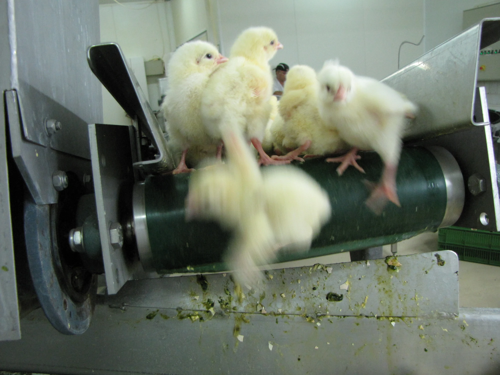

2026-09-28
Like a lot of lawyers, I come from a family of lawyers. My father, grandfather, and great-grandfather all were lawyers, and in fact we all went to the same law school. My great-grandfather was born at the turn of the century, abandoned by his parents and taken in to work on a farm. He graduated law school in 1918 with an LL.B., which was the precursor to the modern J.D., and worked in the Ithaca area as a lawyer for the rest of his life. He died in 1987, aged 92.
It goes without saying that the world changed in incredible, unimaginable ways over the span of his life. But what’s interesting is that his day-to-day job likely changed very little. Clients come and go, but the actual practice of law for a small lawyer looked roughly the same at the end of his career as it did in the beginning. The same was true for his son (my grandfather), and to a lesser extent his son (my father). Things have changed, sure — I’m sitting almost fifty floors up in a glass and steel cocoon in the heart of Manhattan, interacting with other lawyers across the globe almost instantaneously — but until about a year ago I could sit at my desk, read a contract or a memo or a brief, and reasonably draw a line back through a hundred years of my predecessors doing the same thing.
That continuity is coming to an end. Maybe it’s not quite here yet, but if you have spent any amount of time working with AI on legal tasks you can sense the trajectory of capabilities. What lawyers are saying now is like what mathematicians were saying a year ago, and coders a year before that. “The models are good but they don’t have taste.” “The models are like capable interns but they aren’t a replacement for me.” Even if these are true now, I haven’t heard a convincing answer for why it will remain so indefinitely.
Instead, it feels like we are on the leading edge of a comet that is whipping towards the sun. We can burn our engines at full speed, but eventually we are going to be left behind, alone out in space. And right now, the collective might of the world economy is directed like a laser beam at accelerating this comet.
I want to be an optimist about this. I think about the innumerable people that died from easily-preventable diseases, or failed government policy, or the people who slaved their whole lives away on some leisure project for some minor noble somewhere. And I am still excited to see what incredible things are to come. The future is laid out before us. But it’s hard to grapple with the fact that I will be a passive participant in this future.1
People will adapt, I suppose. Maybe the next generation will be Corgi girls and NEETs. Maybe we (royal we) will be able to find value through lives of relaxation and artistic contemplation, or maybe we’ll descend into an orgy of retribution and bloodletting. That’s the future’s problem. I hope it goes great. But spare a thought for the rest of us in the here and now.

And to be clear, we all will be. You can fight kicking and screaming to be “on the inside,” so you can lord over the proles from your tasteful Tiburon pad, but even if you can ride the wave for a little longer you can’t ride it forever. Congrats, you don’t have to work anymore—neither does anyone else, and also they hate you for it. ↩